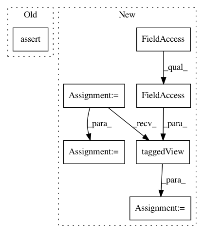

4d24c893cd0de2cd790efd70ad1edd5c131a6e47,ilastik/applets/thresholdTwoLevels/_OpGraphCut.py,OpGraphCut,execute,#OpGraphCut#Any#Any#Any#Any#,98
Before Change
self.opReorderOutput.AxisOrder.setValue(self.inputAxisOrder)
def execute(self, slot, subindex, roi, result):
assert False, "should not get here"
def propagateDirty(self, slot, subindex, roi):
pass
After Change
// request the prediction image
pred = self.Prediction.get(roi).wait()
pred = vigra.taggedView(pred, axistags=self.Prediction.meta.axistags)
pred = pred.withAxes(*"zyx")
// prepare result
resView = vigra.taggedView(result, axistags=self.Output.meta.axistags)
resView = resView.withAxes(*"zyx")
logger.info("Executing graph cut ... (this might take a while)")
threshold_binary = segmentGC(pred, self.Beta.value)
In pattern: SUPERPATTERN
Frequency: 3
Non-data size: 7
Instances
Project Name: ilastik/ilastik
Commit Name: 4d24c893cd0de2cd790efd70ad1edd5c131a6e47
Time: 2018-04-24
Author: fynn.beuttenmueller@iwr.uni-heidelberg.de
File Name: ilastik/applets/thresholdTwoLevels/_OpGraphCut.py
Class Name: OpGraphCut
Method Name: execute
Project Name: ilastik/ilastik
Commit Name: 5ec7c3abfb74a4425a201b49bb814f343d246e15
Time: 2014-04-24
Author: webmaster@burgerdev.de
File Name: tests/test_applets/thresholdTwoLevels/testOpGraphcutSegment.py
Class Name: TestOpObjectsSegment
Method Name: testCC
Project Name: ilastik/ilastik
Commit Name: 5ec7c3abfb74a4425a201b49bb814f343d246e15
Time: 2014-04-24
Author: webmaster@burgerdev.de
File Name: tests/test_applets/thresholdTwoLevels/testOpGraphcutSegment.py
Class Name: TestOpObjectsSegment
Method Name: testComplete